تقنية · ذكاء اصطناعي
ثورة الذكاء الاصطناعي كيف تعيد الآلات التفكير في عالمنا؟

لم يعد الذكاء الاصطناعي حكاية من أفلام الخيال العلمي. هو اليوم يقترح علينا ما نشاهده، ويساعد الأطباء في قراءة الأشعة، ويترجم الكلام في لحظته، ويكتب النصوص والأكواد. إنه واحد من أسرع التحولات التقنية في تاريخ البشرية.
من فكرة إلى واقع
بدأت القصة بسؤال بسيط طرحه العالم آلان تورينغ عام ١٩٥٠: هل تستطيع الآلة أن تفكر؟ وبعد ست سنوات، في ورشة عمل بكلية دارتموث، وُلد مصطلح «الذكاء الاصطناعي» رسمياً. ومنذ ذلك الحين مرّ المجال بفترات حماس وفترات ركود، حتى جاءت الطفرة الحديثة مع توفر البيانات الضخمة والمعالجات القوية.
| السنة | الحدث | لماذا يهم؟ |
|---|---|---|
| ١٩٥٠ | ورقة تورينغ «الحوسبة والذكاء» | طرحت فكرة اختبار ذكاء الآلة |
| ١٩٥٦ | ورشة دارتموث | أول استخدام رسمي لمصطلح «الذكاء الاصطناعي» |
| ٢٠١٢ | نموذج AlexNet | أشعل ثورة التعلّم العميق في التعرّف على الصور |
| ٢٠١٧ | معمارية Transformer | الأساس لمعظم نماذج اللغة الحديثة |
| ٢٠٢٢ | انتشار الذكاء الاصطناعي التوليدي | وصل لملايين المستخدمين اليوميين |
أين نراه اليوم؟
الصحة
دعم تشخيص الصور الطبية واكتشاف الأدوية وتحليل السجلات الصحية.
التعليم
مساعدون يشرحون الدروس ويتكيفون مع مستوى كل طالب وسرعته.
الخدمات اللوجستية
توقع الطلب وتخطيط المسارات وإدارة المخزون وقت الأزمات.
الإبداع والعمل
كتابة وتلخيص وترجمة وبرمجة تسرّع أعمالنا اليومية.
الذكاء الاصطناعي لا يحلّ محل الإنسان، لكن من يتقنه سيحلّ محل من لا يتقنه.
التحديات والأسئلة الأخلاقية
- الوظائف: تتغير المهن وتظهر أخرى جديدة، والتعلّم المستمر هو الحل.
- التحيّز: النماذج تتعلم من بيانات بشرية قد تحمل انحيازات، فيجب اختبارها ومراجعتها.
- الخصوصية: جمع البيانات وتحليلها يستدعي ضوابط واضحة لحماية الأفراد.
- الاعتماد الزائد: قد تُخطئ النماذج بثقة، فيبقى التحقق البشري ضرورياً.
أسئلة سريعة
ما الفرق بين الذكاء الاصطناعي والتعلّم الآلي؟
الذكاء الاصطناعي هو المجال الأوسع لجعل الآلات تؤدي مهام تتطلب ذكاءً. والتعلّم الآلي فرع منه تتعلم فيه الآلة الأنماط من البيانات بدل أن تُبرمج بقواعد ثابتة.
هل أحتاج إلى الرياضيات لأتعلمه؟
تساعدك الأساسيات في الجبر والإحصاء كثيراً، لكن تستطيع البدء بمشاريع عملية بلغة بايثون ثم تعمّق فهمك تدريجياً.
الخلاصة
نحن في بداية الطريق. من يفهم هذه التقنية ويستخدمها بمسؤولية سيصنع الفرق في عمله ومجتمعه. والمهم أن نتعامل معها بفضول وتفكير نقدي، فهي أداة قوية بقدر ما نحسن توجيهها.